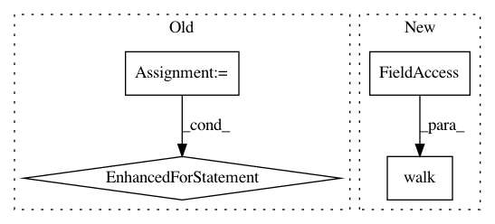

3d7c03ab5a7fcd2459128d9cc849031b28b3f350,src/python/pants/backend/jvm/tasks/detect_duplicates.py,DuplicateDetector,_get_internal_dependencies,#DuplicateDetector#Any#,84
Before Change
// Select classfiles from the classpath.
target = binary_target
targets = ([target] + target.resources) if target.has_resources else [target]
contents = ClasspathUtil.classpath_contents(targets, classpath_products, transitive=False)
for f in contents:
if not f.endswith("/"):
artifacts_by_file_name[f].add(target)
return artifacts_by_file_name
def _get_external_dependencies(self, binary_target):
artifacts_by_file_name = defaultdict(set)
After Change
if not f.endswith("/"):
artifacts_by_file_name[f].add(target.address.reference())
binary_target.walk(record_file_ownership)
return artifacts_by_file_name
def _get_external_dependencies(self, binary_target):
artifacts_by_file_name = defaultdict(set)
In pattern: SUPERPATTERN
Frequency: 4
Non-data size: 4
Instances
Project Name: pantsbuild/pants
Commit Name: 3d7c03ab5a7fcd2459128d9cc849031b28b3f350
Time: 2015-10-12
Author: john.sirois@gmail.com
File Name: src/python/pants/backend/jvm/tasks/detect_duplicates.py
Class Name: DuplicateDetector
Method Name: _get_internal_dependencies
Project Name: pantsbuild/pants
Commit Name: 91cdde2ef79e87a9cb0d80cb55769bc23dc271cc
Time: 2014-08-19
Author: john.sirois@gmail.com
File Name: src/python/pants/backend/jvm/tasks/dependencies.py
Class Name: Dependencies
Method Name: console_output
Project Name: pantsbuild/pants
Commit Name: 9fc18ea7766338b472601b3e1c59d9845ff45ae7
Time: 2014-05-07
Author: john.sirois@gmail.com
File Name: src/python/pants/tasks/bundle_create.py
Class Name: BundleCreate
Method Name: bundle
Project Name: wandb/client
Commit Name: 86536da4461a4909901a7733ff3599e7d68ff477
Time: 2020-08-07
Author: 1735971+davidwallacejackson@users.noreply.github.com
File Name: wandb/filesync/dir_watcher.py
Class Name: DirWatcher
Method Name: finish